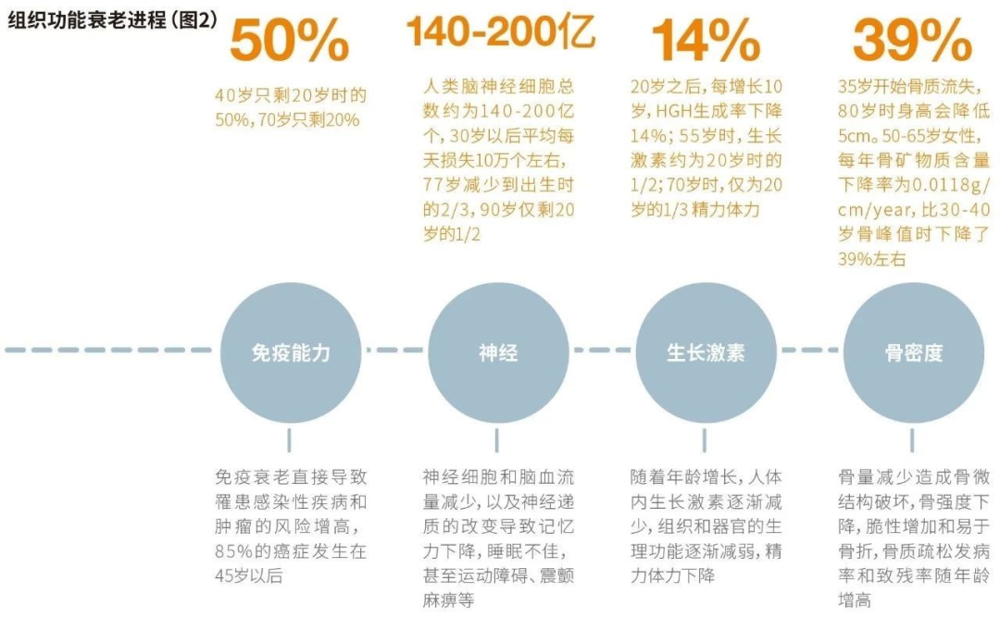
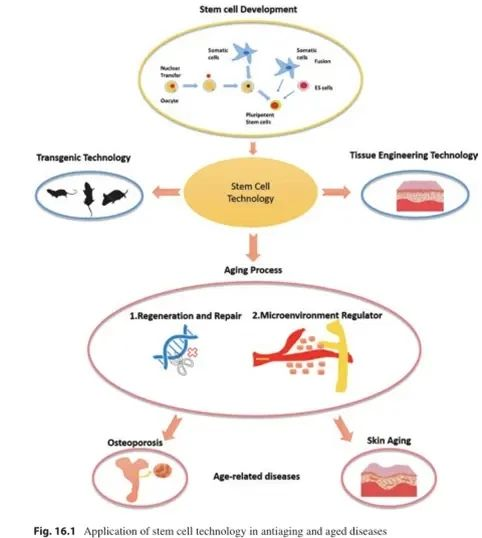
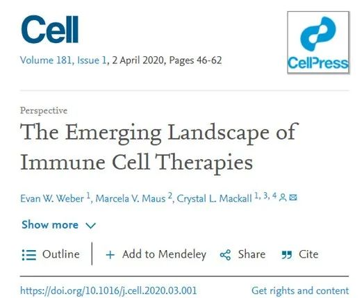
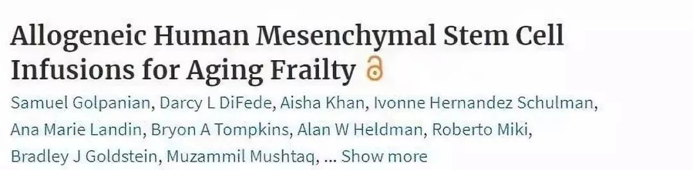

别等身体亮红灯！百年春自体干细胞，为您定制细胞级抗衰防线
2026-03-04

About Us
关于百年春
近期，美国《时代周刊》针对人类细胞抗衰老的重大科技成果采访了生物科技学家及SRW实验室创始人Greg，其中一些观点值得人们深思：“在近十年来的研究，科学家们已经就细胞的九个关键区域达成了共识，这些区域随着年龄的增长而功能下降，如果细胞功能恶化加剧，我们衰老的速度就会更快……
这可能是人类历史上首次对细胞生物学有了足够的认知，并有了正确的手段来干预衰老的进程，让我们优雅老去。”

▲人体的衰老是一个从20岁开始渐进的过程，不同器官和组织的老化进程并不同步。
早在2007年，英国科学家Anastasia在《自然》杂志撰文指出，成体自体干细胞对人体自我修复和组织再生至关重要，成体自体干细胞减少是人体衰老的主要原因。因此，设法增加体内自体干细胞数量，提高其自我更新和分化能力，是由内而外提升机体活力更有效的方法。

在衰老过程中，免疫系统会失去对病原体和癌细胞作出有效反应的能力。
02.
用健康、年轻的细胞来对抗疾病
世界卫生组织对疾病康复、抗衰老的新定义：“治愈疾病、抗衰老最根本的途径是修复细胞、改善细胞代谢、激活衰老细胞的功能”。
近年来，研究表明通过补充年轻、健康的、具备活力的细胞，可以达到治疗疾病以及抗衰老的目的。当前，很多学者致力于研究自体干细胞疗法对各种疾病以及衰老的作用，与此同时也有相关的治疗产品不断上市，逐渐步入临床。

当前通过输注外源性的年轻、健康的自体干细胞来治疗疾病已在临床研究取得了较好的成效，其治疗疾病的能力值得被肯定。
近年来，科学家探索了如何使用健康的干细胞来帮助人类对抗疾病。干细胞老化是损害组织再生、导致与年龄相关的退行性疾病的重要原因，从理论上讲，干细胞可以用来治疗衰老相关疾病，如骨关节炎、心血管疾病、神经退行性疾病等。
2018年，治疗老化衰弱症的干细胞项目获得了美国国立卫生研究院(NIH)的创新研究资助。这款疗法的II期临床研究结果已经公布在国际期刊《老年学杂志》(the Journals of Gerontology)上。36名平均年龄为76岁的老年衰弱综合症患者，参加了随机、双盲、安慰剂对照临床试验，接受间充质干细胞静脉注射后，许多衰弱症典型特征出现了显著的改善，并且未出现不良反应。

再从干细胞对抗衰老相关疾病来看，以骨关节炎为例。随着人体年龄的增加，软骨细胞生成减少，消耗的速度大于生成的速度，导致关节和骨骼逐渐退化，出现骨关节炎。
一项I期临床试验对13名膝关节骨性关节炎Ⅱ、Ⅲ期患者关节腔内间隔1个月注射两剂间充质干细胞，之后进行了为期两年的随访，观察其治疗效果以及安全性。结果显示，关节腔内注射间充质干细胞治疗膝关节骨关节病是安全的，显著改善了Koos评分和膝关节软骨厚度，证实了干细胞治疗骨关节炎的作用。
03.
提前储存健康的自体干细胞，为生命健康备份
由此可见，健康的自体干细胞是人体对抗疾病和抗衰老的“终极大招”。当前，越来越多的细胞疗法正在不断推入市场，并且在多个国家获得批准。细胞治疗时代已经到来，也正是因为如此，在年轻、健康的时候存储健康的自体干细胞，以备将来之需，这样的概念越来越流行。
目前利用成熟的细胞深低温冻存技术，把细胞冻存在-196度的液氮罐中，可以冻存超过20年甚至更久，并且冻存的细胞在复苏之后依旧可以保持年轻健康的活力。